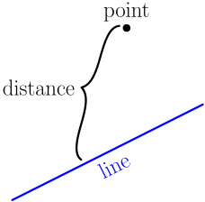
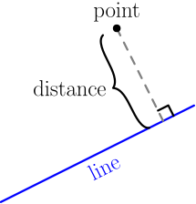
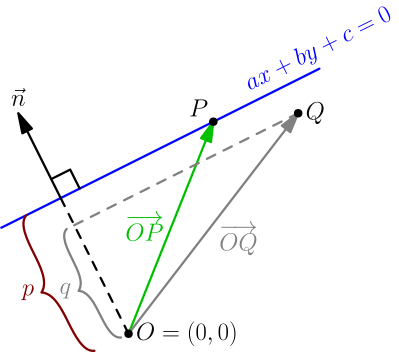

Distance between Line and Point¶
On this page, we'll derive the formula for distance between a line and a point, given the equation of the line and the coordinates of the point. First of all, I don't mean something like this:

The distance must be perpendicularly to the line, like this:

Let's find the distance between any point $Q$ and any line. From this line equation derivation, we know that the equation of any line can be written as $ax+by+c=0$. Here $\vec n = a\I+b\J$ is a normal vector of the line, and for any point $P$ on the line, the projection of $\bigvec{OP}$ onto $\vec n$ is the same. We called it $p$, and we got $c = -p|\vec n|$. Let $q$ denote the projection of $\bigvec{OQ}$ onto $\vec n$.

In the picture, the distance is $p-q$, but if $Q$ was on the other side of the line, it would be $q-p$ instead, because the distance isn't negative. In either case, the distance can be written as $|q-p|$. This means that we need to calculate $q$ and $p$, and then we'll calculate $|q-p|$ and be done.
Let's start by finding $p$ using $c=-p|\vec n|$, which is one of the results we got in the line equation derivation. $$ \begin{align} c &= -p|\vec n| \\ -c &= p|\vec n| \\ -\frac{c}{|\vec n|} &= p \end{align} $$ To find $q$, we calculate the projection of $\bigvec{OQ}$ onto $\vec n$ with a dot product: $$ q = \frac{\bigvec{OQ} \cdot \vec n}{|\vec n|} = \frac{(Q_x\I + Q_y\J) \cdot (a\I+b\J)}{|\vec n|} = \frac{aQ_x+bQ_y}{|\vec n|} $$ Now we can calculate the distance: $$ \begin{align} |q-p| &= \left|\frac{aQ_x+bQ_y}{|\vec n|} - \left( -\frac{c}{|\vec n|} \right)\right| \\ &= \left|\frac{aQ_x+bQ_y}{|\vec n|} + \frac{c}{|\vec n|} \right| \\ &= \left|\frac{aQ_x+bQ_y+c}{|\vec n|} \right| \\ &= \left|\frac{aQ_x+bQ_y+c}{|a\I+b\J|} \right| \\ &= \left|\frac{aQ_x+bQ_y+c}{\sqrt{a^2+b^2}} \right| \\ &= \frac{|aQ_x+bQ_y+c|}{\sqrt{a^2+b^2}} \end{align} $$ In the last step, we noticed that it's enough to take the absolute value of the top, because the bottom is a square root, which can't be negative.
The distance between a point $Q$ and a line $ax+by+c=0$ is $$ \frac{|aQ_x+bQ_y+c|}{\sqrt{a^2+b^2}}. $$
Notice how the inside of the absolute value is the coordinates of $Q$ plugged into $ax+by+c$, and the rest is dividing by the length of the normal vector $a\I+b\J$. This is an easy way to remember the formula.